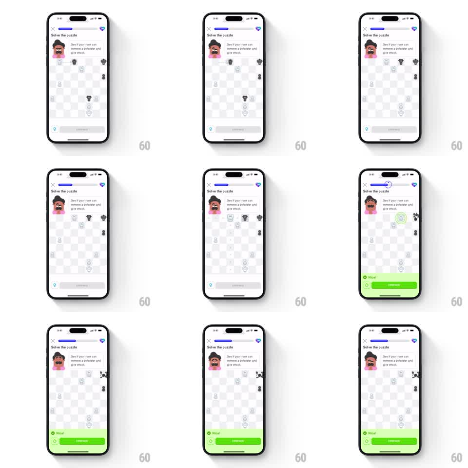

Media
Frame-by-frame

Rebuild this animation 1:1: Duolingo Chess's puzzle-success beat - on a chess puzzle screen, the correct rook move resolves with a particle burst on the captured piece, a springy green ring check highlight on the king, and a green "Nice!" banner that slides up with a continue button while captured pieces shower as confetti.

Rebuild this animation 1:1: Duolingo Chess's puzzle-success beat - on a chess puzzle screen, the correct rook move resolves with a particle burst on the captured piece, a springy green ring check highlight on the king, and a green "Nice!" banner that slides up with a continue button while captured pieces shower as confetti. ## Integration Integration: stack-agnostic spec - springs given as stiffness/damping, timed motions as duration + curve; map every value to your framework and animation library of choice. ## Scene Light chess screen. Top: close X, a purple progress bar, a heart/gem counter. Coach avatar with the prompt "See if your rook can remove a defender and give check." Center: an 8x8 board mid-puzzle with white and black pieces. Bottom: a gem row and a gray "SHOW HINT" button. On success: a green banner with a check icon and "Nice!" plus a green CONTINUE button covers the bottom sheet. ## Motion spec Pattern: puzzle success with particle capture and banner reveal. - The rook slides along its file to the target square (200ms, ease-out). - Capture: the taken piece bursts into ~12 small pixel particles that spray outward (gravity pull, 350ms life, fade to 0). - Check: a green ring draws around the enemy king (stroke draw, 200ms) and the king pops with a spring scale (1.0 -> 1.25 -> 1.0, ~400/15). - The king does a two-shake wobble (rotate -8deg -> 8deg -> 0, 200ms). - Banner: the green "Nice!" sheet slides up from the bottom (280ms, ease-out) while the header progress bar fills its next segment (300ms, ease-out, delayed 100ms). - Victory confetti: 4-6 tiny chess-piece silhouettes burst from the banner and drift down with rotation (700ms, staggered 60ms). ## Calibration - Sequence is causal: move -> capture burst -> king ring/pop -> banner. Each starts as the previous resolves. - Keep the banner Duolingo green (#58CC02) with white text. ## Reduced motion Capture becomes a 150ms fade-out of the piece; king highlights with a static green ring (no pop); banner fades in over 200ms; no confetti. ## Don't miss - The capture particles are chunky pixel squares, not round confetti. - The progress bar advances only after the banner lands - the reward reads as earned.